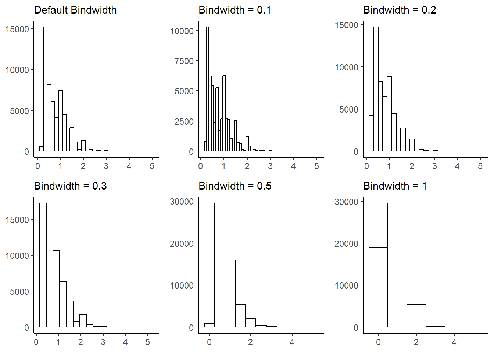

library(tidyverse)
library(palmerpenguins)
penguins = penguinsChapter 2
Data Visualization
2.2.5 Exercises
- How many rows are in
penguins? How many columns?
The number of rows in penguins data-set is 344 and the number of columns is 8
- What does the
bill_depth_mmvariable in thepenguinsdata frame describe? Read the help for?penguinsto find out.
First, we find out the names of the variables in the penguins data frame in Table 1.
names(penguins) |>
t() |>
as_tibble() |>
gt::gt()| V1 | V2 | V3 | V4 | V5 | V6 | V7 | V8 |
|---|---|---|---|---|---|---|---|
| species | island | bill_length_mm | bill_depth_mm | flipper_length_mm | body_mass_g | sex | year |
# Finding the details of the variables.
# ?penguinsThe variable name bill_depth_mm depicts “a number denoting bill depth (millimeters)”.[Gorman, Williams, and Fraser (2014)](Horst, Hill, and Gorman 2020)
- Make a scatter-plot of
bill_depth_mmvs.bill_length_mm. That is, make a scatter-plot withbill_depth_mmon the y-axis andbill_length_mmon the x-axis. Describe the relationship between these two variables.
The scatter-plot is depicted below.
penguins |>
ggplot(mapping = aes(x = bill_length_mm,
y = bill_depth_mm,
col = species)) +
geom_point() +
geom_smooth(se = FALSE,
method = "lm") +
theme_classic() +
labs(x = "Bill Length (mm)", y = "Bill Depth (mm)")
We now test the correlations, and create a beautiful table using gt (Iannone et al. 2023)and gtExtras packages.(Mock 2022)
# Checking the correlation between the two variables
test1 = function(x) {cor.test(x$bill_length_mm, x$bill_depth_mm)$estimate}
# An empty data-frame to collect results
df = tibble(Penguins = NA,
Correlation = NA,
.rows = 4)
# Finding Correlation by each penguin variety
for (y in 1:3) {
c = penguins |>
filter(species == unique(penguins$species)[y]) |>
test1() |>
format(digits = 2)
df[y,2] = c
df[y,1] = unique(penguins$species)[y]
}
# Converting the nature of 1st column from factor to character
df$Penguins = as.character(df$Penguins)
# Storing the overall correlation
df[4,1] = "Overall"
df[4,2] = penguins |> test1() |> format(digits = 2)
# Displaying the result
gt::gt(df) |>
gt::tab_header(title = "Correlation Coefficitents",
subtitle = "Between Bill Length & Bill Depth amongst
different penguins") |>
gtExtras::gt_theme_538() |>
gtExtras::gt_highlight_rows(rows = 4, fill = "#d4cecd")| Correlation Coefficitents | |
| Between Bill Length & Bill Depth amongst different penguins | |
| Penguins | Correlation |
|---|---|
| Adelie | 0.39 |
| Gentoo | 0.64 |
| Chinstrap | 0.65 |
| Overall | -0.24 |
Thus, we see that the relation is not apparent on a simple scatter plot, but if we plot a different colour for each species, we observe that there is positive correlation between Bill Length and Bill Depth, in all three species. The strongest correlation is amongst Gentoo and Chinstrap penguins.
What happens if you make a scatter-plot of
speciesvs.bill_depth_mm? What might be a better choice of geom?If we make a scatter-plot of
speciesvs.bill_depth_mm, the following happens:-penguins |> ggplot(mapping = aes(x = species, y = bill_depth_mm)) + geom_point() + theme_bw() + labs(x = "Species", y = "Bill Depth (mm)")
Figure 2: Scatter plot of species vs. Bill Depth This produces an awkward scatter-plot, since the x-axis variable is discrete, and not continuous. A better choice of
geommight be a box-plot, which is a good way to present the relationship between a continuous (Bill Depth) and a categorical (species) variable. which shows that the average Bill Depth (in mm) is lower in Gentoo penguins compared to the other two.penguins |> ggplot(mapping = aes(x = species, y = bill_depth_mm)) + geom_boxplot() + theme_bw() + labs(x = "Species", y = "Bill Depth (mm)")Figure 3: Box-plot of species vs. Bill Depth Why does the following give an error and how would you fix it?
ggplot(data = penguins) + geom_point()The above code will give an error, because we have only given the data to the
ggplotcall, but not specified themappingaesthetics, i.e., the x-axis and y-axis for the scatter plot called by thegeom_point(). We can fix the error as follows in Figure 4 :---ggplot(data = penguins, mapping = aes(x = bill_depth_mm, y = bill_length_mm)) + geom_point()Warning: Removed 2 rows containing missing values (`geom_point()`).Figure 4: Corrected code to display the plot What does the
na.rmargument do ingeom_point()? What is the default value of the argument? Create a scatterplot where you successfully use this argument set toTRUE.Within the function
geom_point()thena.rmargument can do one of the two things. If it is set toFALSE, as it is by default, then the missing values are removed but the following warning message is displayed:–Warning message: Removed 2 rows containing missing values (`geom_point()`)But, if it is set to
na.rm = TRUE, then the missing values are silently removed. Here’s the code withna.rm = TRUEto produce Figure 5 :---ggplot(data = penguins, mapping = aes(x = bill_depth_mm, y = bill_length_mm)) + geom_point(na.rm = TRUE)
Figure 5: Corrected code to display the plot with na.rm = TRUE Add the following caption to the plot you made in the previous exercise: “Data come from the
palmerpenguinspackage.” Hint: Take a look at the documentation forlabs().The caption is added here with the
labsfunction withggplotfunction below in (fi?)ggplot(data = penguins, mapping = aes(x = bill_depth_mm, y = bill_length_mm)) + geom_point(na.rm = TRUE) + labs(caption = "Data come from the palmerpenguins package.")Figure 6: Plot with a caption added in ggplot call itself Recreate the following visualization. What aesthetic should
bill_depth_mmbe mapped to? And should it be mapped at the global level or at the geom level?penguins |> ggplot(mapping = aes(x = flipper_length_mm, y = body_mass_g)) + geom_point(mapping = aes(color = bill_depth_mm)) + geom_smooth()
Figure 7: Recreated figure using the ggplot2 code The code above recreates the Figure 7. The aesthetic should
bill_depth_mmshould be mapped the aestheticcoloin thegeom_point()function level. It should not be done at the global level, because then it will even be an aesthetic forgeom_smoothresulting in multiple smoother lines fitted for each level ofbill_depth_mm, and possible result in an error becausebill_depth_mmis not a categorical variable or a factor variable with certain distinct categories or levels.Luckily,
ggplot2recognizes this error and still produces the same plot by droppin thecoloraesthetic, i.e.,The following aesthetics were dropped during statistical transformation: colour.So,ggplot2is trying to guess our intentions, and it works, but thecodenot correct. The wrongcodeis tested at Figure 8.penguins |> ggplot(mapping = aes(x = flipper_length_mm, y = body_mass_g, color = bill_depth_mm)) + geom_point() + geom_smooth()`geom_smooth()` using method = 'loess' and formula = 'y ~ x'Warning: Removed 2 rows containing non-finite values (`stat_smooth()`).Warning: The following aesthetics were dropped during statistical transformation: colour ℹ This can happen when ggplot fails to infer the correct grouping structure in the data. ℹ Did you forget to specify a `group` aesthetic or to convert a numerical variable into a factor?Warning: Removed 2 rows containing missing values (`geom_point()`).
Figure 8: The Wrong Code - Recreated figure is the same - but the code is fundamentally flawed Run this code in your head and predict what the output will look like. Then, run the code in R and check your predictions.
ggplot(data = penguins, mapping = aes(x = flipper_length_mm, y = body_mass_g, color = island)) + geom_point() + geom_smooth(se = FALSE)On visual inspection, I believe this code should create a scatter plot of penguins flipper lengths (on x-axis) vs. body mass (on y-axis), with the dots coloured by islands on the penguins. Further, a smoother line if fitted to show the relationship, with a separate smoother line for each island type. Thus, since we know there are three types of islands, we expect three smoother lines fitted to the plot, without the display of standard error intervals.
Now, let us check our predictions with the code in the Figure 9 :--

Figure 9: Plot generated from running the Code of Question 9 Will these two graphs look different? Why/why not?
# Code 1 ggplot(data = penguins, mapping = aes(x = flipper_length_mm, y = body_mass_g)) + geom_point() + geom_smooth() # Code 2 ggplot() + geom_point(data = penguins, mapping = aes(x = flipper_length_mm, y = body_mass_g) ) + geom_smooth(data = penguins, mapping = aes(x = flipper_length_mm, y = body_mass_g))Yes, these two graphs should look the same. Since, the data and the aesthetics mapped are the same in both. Only difference is that the second code has redundancy.
Here’s the visual confirmation for both codes in Figure 10.
Figure 10: Comparison of the two plots produced by the codes in Question 10
2.4.3 Exercises
Make a bar plot of
speciesofpenguins, where you assignspeciesto theyaesthetic. How is this plot different?When we assign
speciesto the y-axis, we get a horizontal bar plot, instead of the vertical bar plot given in the textbook. The results are compared in Figure 11 .p1 = penguins |> ggplot(aes(x = species)) + geom_bar() + labs(caption = "Species on x-axis") p2 = penguins |> ggplot(aes(y = species)) + geom_bar() + labs(caption = "Species on y-axis") gridExtra::grid.arrange(p1, p2, ncol = 2)Figure 11: Change in figure when species is assigned to y-axis How are the following two plots different? Which aesthetic,
colororfill, is more useful for changing the color of bars?The output of the two plots is in Figure 12 .
gridExtra::grid.arrange( ggplot(penguins, aes(x = species)) + geom_bar(color = "red") + labs(caption = "Color = Red"), ggplot(penguins, aes(x = species)) + geom_bar(fill = "red") + labs(caption = "Fill = Red"), ncol = 2)Figure 12: The two plots produced by the code given, with red color vs. red fill The two plots are different in where the colour red appears. As a
coloraesthetic, it appears only on the borders. But, as afillaesthetic, it fills the entire bar(s).Thus, the aesthetic
fillis more useful in changing the colour of the bars.What does the
binsargument ingeom_histogram()do?The bins argument tell the number of bins (i.e. number of bars) in the histogram to be plotted. The default value is 30. However, if the
binwidthis also specified, then thebinwidthargument over-rides thebinsargument.Make a histogram of the
caratvariable in thediamondsdataset that is available when you load the tidyverse package. Experiment with different binwidths. What bin-width reveals the most interesting patterns?g1 = ggplot(diamonds, aes(x=carat)) + geom_histogram(fill = "white", color = "black") + theme_classic() + labs(x = NULL, y = NULL, subtitle = "Default Bindwidth") g2 = ggplot(diamonds, aes(x=carat)) + geom_histogram(fill = "white", color = "black", binwidth = 0.1) + theme_classic() + labs(x = NULL, y = NULL, subtitle = "Bindwidth = 0.1") g3 = ggplot(diamonds, aes(x=carat)) + geom_histogram(fill = "white", color = "black", binwidth = 0.2) + theme_classic() + labs(x = NULL, y = NULL, subtitle = "Bindwidth = 0.2") g4 = ggplot(diamonds, aes(x=carat)) + geom_histogram(fill = "white", color = "black", binwidth = 0.3) + theme_classic() + labs(x = NULL, y = NULL, subtitle = "Bindwidth = 0.3") g5 = ggplot(diamonds, aes(x=carat)) + geom_histogram(fill = "white", color = "black", binwidth = 0.5) + theme_classic() + labs(x = NULL, y = NULL, subtitle = "Bindwidth = 0.5") g6 = ggplot(diamonds, aes(x=carat)) + geom_histogram(fill = "white", color = "black", binwidth = 1) + theme_classic() + labs(x = NULL, y = NULL, subtitle = "Bindwidth = 1") gridExtra::grid.arrange(g1, g2, g3, g4, g5, g6, ncol = 3, nrow = 2)
Figure 13: Histogram with different bin-widths tried out to select the most relevant one Thus, we see that best
binwidthis either the defaultbinwidthchosen byggplot2or the bind-width of 0.2 per bin, since it reveals the most interesting patterns.
2.5.5 Exercises
The
mpgdata frame that is bundled with the ggplot2 package contains 234 observations collected by the US Environmental Protection Agency on 38 car models. Which variables inmpgare categorical? Which variables are numerical? (Hint: Type?mpgto read the documentation for the dataset.) How can you see this information when you runmpg?The code below displays the summary fo the
mpgdata-set. The following variables are categorical:manufacturer(manufacturer name),model(model name),trans(type of transmission),drv(the type of drive train: front, rear or 4-wheel),fl(fuel type), andclass(type of car). The numerical variables aredispl(engine displacement, in litres),year(year of manufacture) ,cyl(number of cylinders) ,cty(city miles per gallon) andhwy(highway miles per gallon). We can see these in the square parenthesis the column titled Variable in the output of the code below .# Visualize summary of the data frame mpg |> summarytools::dfSummary(plain.ascii = FALSE, style = "grid", graph.magnif = 0.75, valid.col = FALSE, na.col = FALSE, headings = FALSE) |> view()If we simply run
mpg, we can still see this information in theRconsole output, by the terms<chr>(for categorical variables) ; and,<dbl>or<int>(for numerical variables)mpg ## # A tibble: 234 × 11 ## manufacturer model displ year cyl trans drv cty hwy fl class ## <chr> <chr> <dbl> <int> <int> <chr> <chr> <int> <int> <chr> <chr> ## 1 audi a4 1.8 1999 4 auto… f 18 29 p comp… ## 2 audi a4 1.8 1999 4 manu… f 21 29 p comp… ## 3 audi a4 2 2008 4 manu… f 20 31 p comp… ## 4 audi a4 2 2008 4 auto… f 21 30 p comp… ## 5 audi a4 2.8 1999 6 auto… f 16 26 p comp… ## 6 audi a4 2.8 1999 6 manu… f 18 26 p comp… ## 7 audi a4 3.1 2008 6 auto… f 18 27 p comp… ## 8 audi a4 quattro 1.8 1999 4 manu… 4 18 26 p comp… ## 9 audi a4 quattro 1.8 1999 4 auto… 4 16 25 p comp… ## 10 audi a4 quattro 2 2008 4 manu… 4 20 28 p comp… ## # ℹ 224 more rowsMake a scatterplot of
hwyvs.displusing thempgdata frame. Next, map a third, numerical variable tocolor, thensize, then bothcolorandsize, thenshape. How do these aesthetics behave differently for categorical vs. numerical variables?g1 = mpg |> ggplot(aes(x = hwy, y = displ)) + geom_point() + theme_minimal() + labs(caption = "Original Plot") # Using numerical variable 'cty' to map to colour, size g2 = mpg |> ggplot(aes(x = hwy, y = displ, color = cty)) + geom_point() + theme_minimal()+ labs(caption = "cty mapped to color") g3 = mpg |> ggplot(aes(x = hwy, y = displ, size = cty)) + geom_point(alpha = 0.5) + theme_minimal()+ labs(caption = "cty mapped to size") g4 = mpg |> ggplot(aes(x = hwy, y = displ, color = cty, size = cty)) + geom_point() + theme_minimal()+ labs(caption = "cty mapped to size and color") gridExtra::grid.arrange(g1, g2, g3, g4, ncol = 2)Figure 14: Scatterplots of different kinds for different aesthetic mappings So, we see that we can map a numerical variable to
colororsizeaesthetics, andggplot2will itself make a scale and display the output with a legend. However, numerical variables (i.e., continuous variables) don’t map toshapeaesthetic, as there cannot be any continuum amongst shapes. Accordingly, when mapped toshape, the code throws an error as below:---# Using numerical variable 'cty' to map to size aesthetic mpg |> ggplot(aes(x = hwy, y = displ, shape = cty)) + geom_point()Error in `geom_point()`: ! Problem while computing aesthetics. ℹ Error occurred in the 1st layer. Caused by error in `scale_f()`: ! A continuous variable cannot be mapped to the shape aesthetic ℹ choose a different aesthetic or use `scale_shape_binned()`Thus, the
shapeaesthetic works only with categorical variables, whereascolorworks with both numerical and categorical variables; and, by definitionsizeaesthetic should be used only with numerical variables (it can work with categorical variables, but then the sizes are assigned arbitrarily to different categories).In the scatter-plot of
hwyvs.displ, what happens if you map a third variable tolinewidth?mpg |> ggplot(aes(x = hwy, y = displ, linewidth = cty)) + geom_point() + theme_minimal()Figure 15: Experiment with mapping line width to a third variable As we see, nothing changes with addition of the
linewidthargument in Figure 15 . This is because thelinewidthargument “scales the width of lines and polygon strokes.” inggplot2documentation. Since we are only plotting point geoms, and no lines, the argument is useless and not used to produce the output.What happens if you map the same variable to multiple aesthetics?
We can map the same variable to multiple aesthetics, and the output will display its variations in all such aesthetics. But it is redundant, and make plot cluttery with too much visual input.
For example, Figure 16 shows a poorly understandable plot where
classof the vehicle is mapped to size, shape and color. It works, but there’s too much information redundancy.mpg |> ggplot(aes(x=hwy, y = cty, size = class, color = class, shape = class)) + geom_point(alpha = 0.5) + theme_classic()Figure 16: A messy plot with Mutliple aesthetics defined by the same variable Make a scatterplot of
bill_depth_mmvs.bill_length_mmand color the points byspecies. What does adding coloring by species reveal about the relationship between these two variables? What about faceting byspecies?The Figure 17 shows the importance of coloring or faceting by
species. This allows us to detect a fairly strong positive correlation which was not apparent in the simple scatter plot. This, perhaps, can be called an example of negative confounding (Mehio-Sibai et al. 2005) of the relation between bill depth and bill length by the species type.p1 = penguins |> ggplot(mapping = aes(x = bill_length_mm, y = bill_depth_mm)) + geom_point() + geom_smooth(se = FALSE, method = "lm") + theme_classic() + labs(x = "Bill Length (mm)", y = "Bill Depth (mm)", subtitle = "No relation is apparent") p2 = penguins |> ggplot(mapping = aes(x = bill_length_mm, y = bill_depth_mm, col = species)) + geom_point() + geom_smooth(se = FALSE, method = "lm") + theme_classic() + labs(x = "Bill Length (mm)", y = "Bill Depth (mm)", subtitle = "Colouring by species reveals relations") p3 = penguins |> ggplot(mapping = aes(x = bill_length_mm, y = bill_depth_mm)) + geom_point() + geom_smooth(se = FALSE, method = "lm") + facet_wrap(~species) + theme_classic() + labs(x = "Bill Length (mm)", y = "Bill Depth (mm)", subtitle = "Faceting also reveals the relations") lay = rbind(c(1,1,2,2,2), c(3,3,3,3,3)) gridExtra::grid.arrange(p1, p2, p3, layout_matrix = lay)Figure 17: Adding color by species reveals a strong relationship Why does the following yield two separate legends? How would you fix it to combine the two legends?
ggplot(data = penguins,
mapping = aes(x = bill_length_mm,
y = bill_depth_mm,
color = species,
shape = species)) +
geom_point() +
labs(color = "Species")This code presents a plot with two legends because in the last line, we have forced ggplot2 to name out “Color” legend as the string “Species”. Thus, ggplot2 differentiates between “species” and “Species”.
We can correct this issue in either of the following two ways:--
ggplot(data = penguins,
mapping = aes(x = bill_length_mm,
y = bill_depth_mm,
color = species,
shape = species)) +
geom_point()or,
ggplot(data = penguins,
mapping = aes(x = bill_length_mm,
y = bill_depth_mm,
color = species,
shape = species)) +
geom_point()Create the two following stacked bar plots. Which question can you answer with the first one? Which question can you answer with the second one?
The plots are produced in Figure 18 .
g1 = ggplot(penguins, aes(x = island, fill = species)) + geom_bar(position = "fill") + labs(subtitle = "Sub-figure A") g2 = ggplot(penguins, aes(x = species, fill = island)) + geom_bar(position = "fill") + labs(subtitle = "Sub-figure B") gridExtra::grid.arrange(g1, g2, ncol = 2)Figure 18: The two stacked bar plots produced by the code The Sub-Figure A answers the question, that “On each of the three islands, what proportion of penguins belong to which species?”
The Sub-Figure B answers the question reg. distribution of the population of each species of penguins, that is, “For each of the penguin species’, what proportion of each species total population is found on which island?”
2.6.1 Exercises
Run the following lines of code. Which of the two plots is saved as
mpg-plot.png? Why?ggplot(mpg, aes(x = class)) + geom_bar() ggplot(mpg, aes(x = cty, y = hwy)) + geom_point() ggsave("mpg-plot.png")The second plot, i.e., the scatter plot is saved into the file “mpg-plot.png” in the working directory, because the function
ggsave()saves only the most recent plot into the file.What do you need to change in the code above to save the plot as a PDF instead of a PNG? How could you find out what types of image files would work in
ggsave()?To save the plot as a PDF file, we will need to add the arguments
device = "pdf"to theggsave()function call. We can find out the types of image files that would work by using the help forggsave()function by running the code?ggsaveat the command prompt.The documentation for the
deviceargument withinggsave()function tells us that following image document types work with it:--a device function (e.g. png), or
one of “eps”, “ps”, “tex” (pictex), “pdf”, “jpeg”, “tiff”, “png”, “bmp”, “svg” or “wmf” (windows only).
References
Gorman, Kristen B., Tony D. Williams, and William R. Fraser. 2014. “Ecological Sexual Dimorphism and Environmental Variability Within a Community of Antarctic Penguins (Genus Pygoscelis).” Edited by André Chiaradia. PLoS ONE 9 (3): e90081. https://doi.org/10.1371/journal.pone.0090081.
Horst, Allison M, Alison Presmanes Hill, and Kristen B Gorman. 2020. Allisonhorst/Palmerpenguins: V0.1.0. Zenodo. https://doi.org/10.5281/ZENODO.3960218.
Iannone, Richard, Joe Cheng, Barret Schloerke, Ellis Hughes, Alexandra Lauer, and JooYoung Seo. 2023. “Gt: Easily Create Presentation-Ready Display Tables.” https://CRAN.R-project.org/package=gt.
Mehio-Sibai, Abla, Manning Feinleib, Tarek A. Sibai, and Haroutune K. Armenian. 2005. “A Positive or a Negative Confounding Variable? A Simple Teaching Aid for Clinicians and Students.” Annals of Epidemiology 15 (6): 421–23. https://doi.org/10.1016/j.annepidem.2004.10.004.
Mock, Thomas. 2022. “gtExtras: Extending ’Gt’ for Beautiful HTML Tables.” https://CRAN.R-project.org/package=gtExtras.